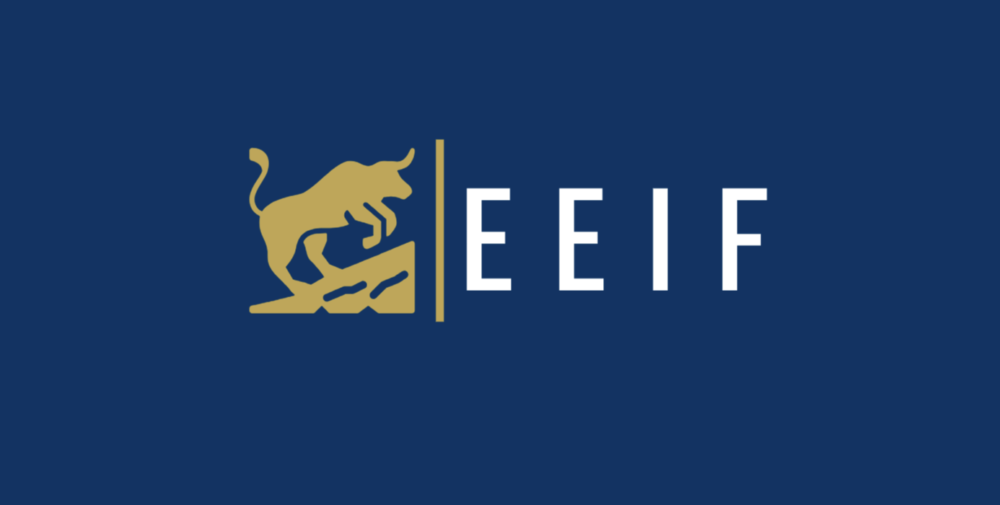
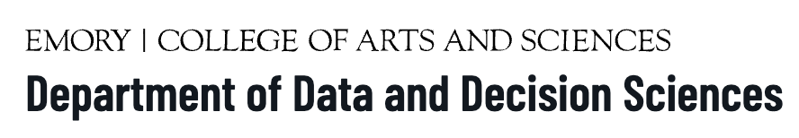

← About me
04 / COMMUNITY
Leadership and Community Involvement
Quantitative Research Team Lead

Teaching Assistant & Course Designer
DATASCI 151 · Intro to Python Programming

Tools I work with
Python · PyTorch · NumPy · SciPy · scikit-learn · C · C# · Java · SQL · R · MATLAB · LlamaIndex · LangGraph · Azure AI Foundry · RAG · MCP